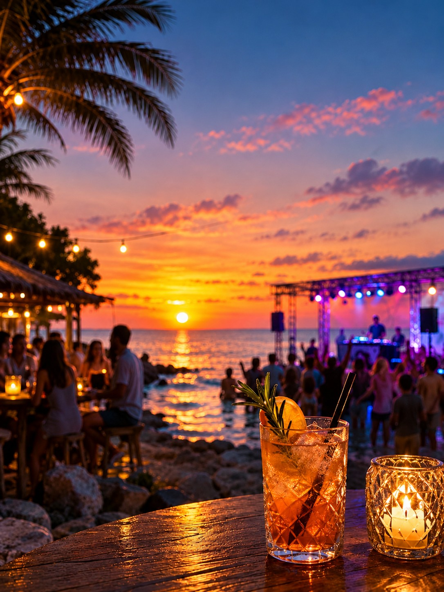

Cocktailbars
Vie, Umbra en Marina Cafe Bar stonden bij de cocktailbars. Meer tips staan bij Cocktails.

De oude gids deelde het nachtleven in vier groepen in. Hieronder staan de namen die daarop stonden, zonder verzonnen openingstijden.
Vie, Umbra en Marina Cafe Bar stonden bij de cocktailbars. Meer tips staan bij Cocktails.
Op de lijst: Bar Street, Mattatoio, Sitar, Mylos Beach Bar, Camel Bar, Downtown Club en Caramela. Bar Street gaat niet overal even vroeg dicht — lees de aparte pagina.
Strand- en poolfeesten: Mylos, Black Amber en Amos. Er zijn ook partyboten. Het seizoen bepaalt of ze varen.